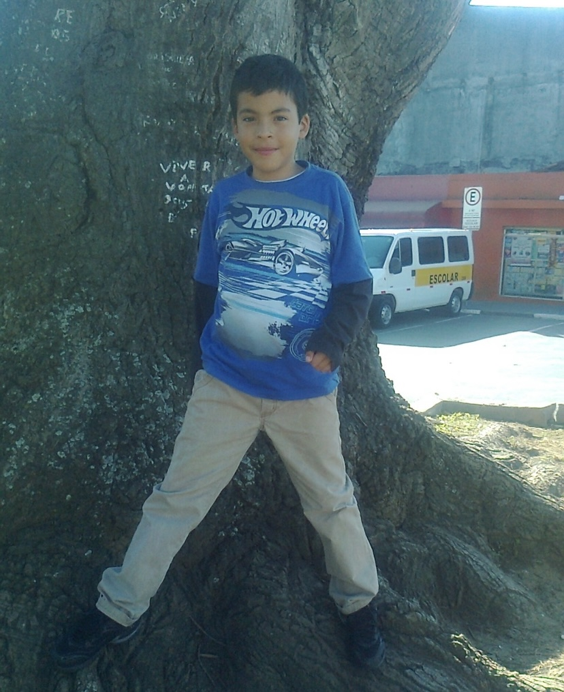

Olá, meu nome é Saulo S. Oliveira, sou o idealizador e desenvolvedor deste pequeno portal que foi criado para responder aos requisitos propostos pela atividade do Professor Gabriel que tinha como objetivo testar nossos conhecimentos práticos sobre HyperText Markup Language e Cascading Style Sheets. Não tenho grandes dotes nessas áreas, contudo, estou sempre me desenvol- vendo e esse foi o meu primeiro website criado do zero. Antes de dar continuidade na explicação da minha página, quero agra- decer didática do Professor Gabriel, seu senso de compreensão é um grande diferecial para mim e suas aulas são ótimas.
Bom, agora voltando para o assunto central deste pequeno artigo, quero ressaltar o fato de que todos os jogos e filmes aqui listados são de grande importância para mim. Nunca fui uma pessoa com muitos amigos, mesmo quando criança, então todos os títulos presentes neste website representam boas memórias e foram selecionados a dedo. O nome do site é "Fortis Fortuna Adiuvat" que siginifica "A sorte favorece os corajosos" em latim, frase cunhada do filme John Wick. Escolhi como cores principais o azul escuro pois é uma cor capaz de estimular a criatividade em um ambiente e transmitir a sensação de sucesso e conquista e o vermelho porque representa paixão e amor. A partir disso, existem três telas home, sendo a principal do site, uma de filmes e uma de jogos e de cada uma delas é possível acessar pequenos artigos com temas variados, existem 20 artigos dentro deste projeto. Falando um pouco da estética, usei algumas funcionalidades de CSS para melhorar a interatividade site-usuário como efeitos de cursor no menu de navegação e nas imagens em geral. Bom, identifiquei alguns pontos em que eu poderia ter feito algumas melhorias, contudo, por ser meu primeiro projeto prático achei melhor deixar da forma original para poder comparar com projetos futuros e sentir a diferença do meu desenvolvimento profissional. Obrigado pela leitura, até a próxima!
